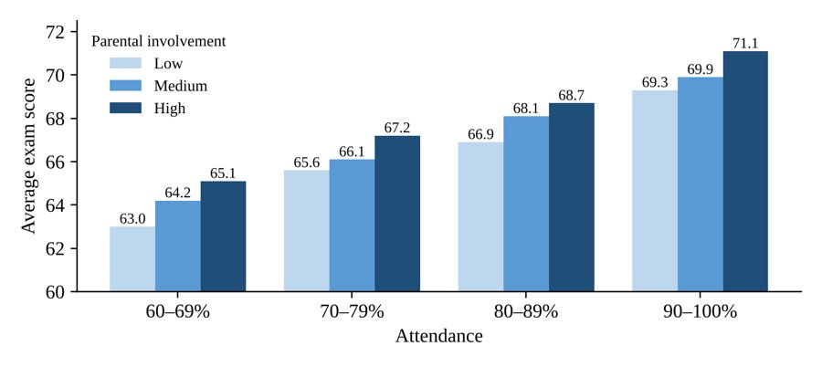
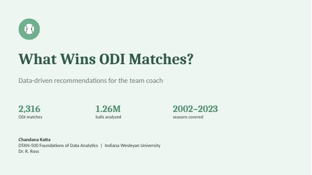

Projects
My Work
Course projects in AI and data analytics. Each one includes the full file so you can see the work itself, not just a description.

Data Analytics Projects

Excel · ChatGPT Data Analyst
Human vs. AI Analyst
I analyzed 6,607 student records in Excel, then ran the same data through ChatGPT's Data Analyst. The core numbers matched, but I found reasoning gaps the AI didn't catch on its own.
Open presentation (PDF) →
Excel · Pivot tables · Regression
Data Fusion: What Drives Exam Scores?
Combined behavior, personal, and home data. Attendance and study hours together explained 54% of the variation in scores, much more than either one alone.
Open report (PDF) →
Excel · Dashboards
Cricket Analytics: ODI Strategy
Analyzed one-day international match data in Excel to turn match results into strategy recommendations.
Open presentation (PDF) →